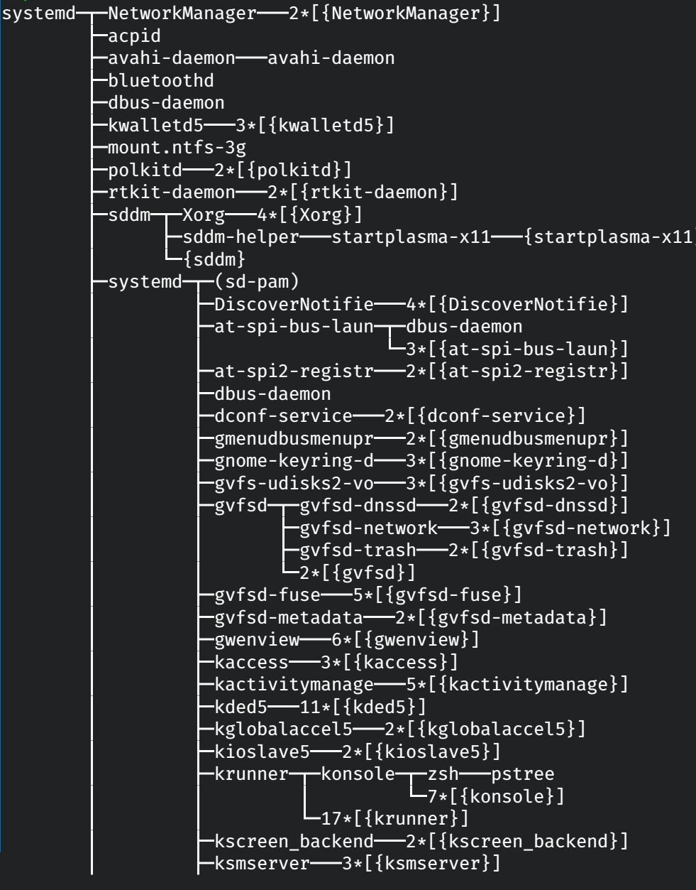

Universidad Nacional Experimental Del Táchira
Decanato De Docencia
Dpto. Ingeniería Informática
Sistemas Operativos
Código 0435607T
Contenido
- Sistemas mono-tarea y multi-tarea.
-
Procesos:
- Definición.
- Estados.
- Bloque de proceso.
-
Planificación de procesos:
- Colas
- Cambio de contexto
Sistemas monotarea
- Al principio las computadoras solo podían ejecutar 1 programa al mismo tiempo.
- Todos los recursos del sistema estaban disponibles sólo para ese proceso.
- Si fallaba o el programa estaba mal escrito se alteraba el funcionamiento de todo el sistema.
Sistemas multitarea
- Permite la ejecución de varias tareas al mismo tiempo, multiplexando el CPU e incrementando la productividad.
-
En estos sistemas estan formados por un conjunto de procesos:
- Procesos del sistema.
- Procesos de usuario.
Proceso
Según la norma internacional ISO-9001 un proceso es:
"Una actividad que utiliza recursos, y se gestiona con el fin de permitir que los elementos de entrada se transformen en resultados"
Proceso
- Un proceso no es más que una instancia de un programa en ejecución, incluyendo los valores actuales del contador de programa, los registros y las variables.
- Esta compuesto por:
| Código | Registros | Pila | Datos |
Procesos
- Todo el software ejecutable del computador es organizado en varios procesos secuenciales.
- Los procesos se conmutan rápidamente con la CPU, dando la impresión varios de ellos ejecutándose al mismo tiempo (Multiprogramación).
Procesos
- La velocidad a la que un proceso ejecuta sus cálculos no es uniforme. Intervienen muchos factores.
- No se pueden estimar eventos ni situaciones de los procesos en función del tiempo de ejecución.
- Hay situaciones donde el CPU no debería conmutarse, por ejemplo, espera de datos de E/S.
Procesos
- Un proceso NO es un programa, es es un programa en ejecución
- Un ejemplo es una receta de cocina y un cocinero... en mitad de receta su hijo llega con una picada de abeja...
- Iniciar dos veces un programa no quiere decir que se tengan dos procesos iguales
Procesos
"Los procesos son como un ser humano: son generados, tienen mas o menos una vida significativa, opcionalmente generan uno o mas procesos hijos, y eventualmente mueren. Una pequeña diferencia es el que la reproducción no es común entre los procesos - cada proceso tienen un solo padre." Understanding the Linux Kernel
(2nd edition)
Creación de procesos
- El arranque del sistema.
- Ejecución de una llamada al sistema para la creación de procesos.
- Una petición de usuario para la creación de procesos.
- El inicio de un trabajo por lotes.
Terminación de procesos
- Salida normal: Se ha terminado el de ejecutar o sencillamente el usuario lo termina. Salida voluntaria.
- Salida por error: El proceso no se completa alguna situación excepcional. Ej: falta algún parámetro en el comando. Salida voluntaria.
Terminación de procesos
- Error fatal: Producido por el proceso. Producido por un error en el programa. Salida Involuntaria.
- Eliminado por otro proceso: Se ejecuta otro proceso con suficientes privilegios para realizar otra llamada al sistema indicándole que debe eliminar el proceso. Salida involuntaria. Ej : En Linux el comando kill
Jerarquía de procesos
- Un proceso puede tener cero, uno o mas hijos, y estos a su vez también podrían tenerlos.
- Un grupo de procesos esta compuesto por un proceso padre y sus procesos hijos.

- Un ejemplo fácil del ver es el inicio de un sistema Linux.
Estados del proceso
- Durante el tiempo de vida en el sistema un proceso toma varios estados.
- Algunos de ellos son propios de la naturaleza del proceso y otros son debido a otros factores del sistema operativo y su planificador.
Estados del proceso

Estados del proceso
- Nuevo: está siendo creado.
- Listo o Preparado: en espera por el CPU.
- Ejecución: se encuentra en el procesador realizando sus operaciones.
- Espera/Bloqueado: no está en el CPU y esta en espera de un evento (operación con un dispositivo de E/S o por una señal).
- Suspendido: pasa de la memoria al disco para liberar espacio.
- Terminado: ha terminado su ejecución.
Planificación de procesos
- El objetivo de la multiprogramación es ejecutar varios procesos al mismo tiempo con el fin de maximizar el uso del CPU.
- Para cumplir este objetivo, el planificador de procesos selecciona un proceso disponible para ejecutarlo. En el caso de sistemas de un procesador, nunca habrá mas de un proceso en ejecución, por ello, desperar hasta que el CPU quede libre y se asigne un nuevo proceso.
Colas de
Planificación de procesos

A medida que se van creando y ejecutando procesos en el sistema, al cambiar de estado se coloca en su respectiva cola para ser procesado de acuerdo al planificador.
Cambio de contexto


- Realizado por el planificador del S.O.
- Se origina con una interrupción del procesador, que puede ser por suceso externo (culminación de un proceso de E/S), por una excepción, el proceso culminó, etc.
Cambio de contexto
- Se ejecuta una rutina llamada Cambio de contexto:
- Se salva el estado del programa en ejecución del microprocesador a la memoria principal.
- Selecciona otro programa a ejecutar según un algoritmo equitativo.
- Restaura el estado del programa seleccionado desde la memoria principal a los registros del microprocesador.
- Ejecuta el programa saltando a la instrucción que estaba pendiente de ejecutar.
Este proceso consume tiempo extra de procesador, que no se usa para otros procesos.
Implementación
- Para controlar todos los procesos, el sistema operativo requiere de un registro para mantener la información de todos ellos. Tabla de procesos o Bloques de control de procesos.
- Mantiene elementos como: Estado, contador del programa, registros del CPU, información de planificación de la CPU, información contable, información de E/S.
Bloque de control de proceso (PCB)
Es una estructura de datos en el núcleo del S.O con información requerida para administrar un proceso en particular, esta compuesto por:
- Estado: el estado actual del proceso.
- Contador de programa: dirección de la siguiente instrucción a realizar.
- Registros del CPU: depende de la arquitectura de la computadora, guarda punteros de pila, registros de propósito general, acumuladores, entre otros.
- Información de planificación de la CPU: la prioridad del proceso y demás valores para el algoritmo de planificación.
Bloque de control de proceso (PCB)
- Información contable: almacena la cantidad de tiempo en el CPU, límite de tiempo asignado, numero de proceso, entre otros.
- Información de E/S: posee un listado de los archivos y dispositivos de E/S asignados al proceso.

Modelación de la
multi-programación
- Se supone que si un proceso consume 20% de CPU, entonces colocando 5, el CPU siempre estará ocupado.
- Sin embargo esto no es del todo cierto, todos los procesos no esperan lo mismo por E/S.
- Recordemos que estimar tiempos en un sistema computacional es muy complicado
Modelación de la
multi-programación
- Realmente es una función de probabilidad de la forma:
Uso de CPU = 1 - pn
- El uso de memoria viene dado por la cantidad necesaria para el sistema operativo y los procesos a ejecutar. Ej : Un servidor Web.
Modelación de la
multi-programación